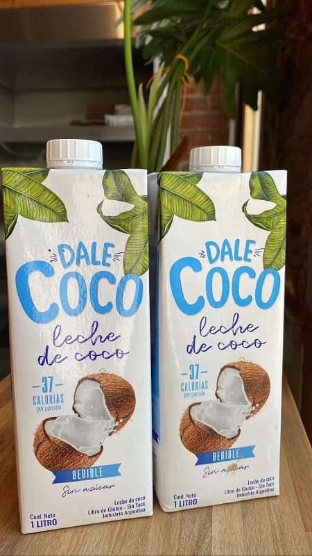
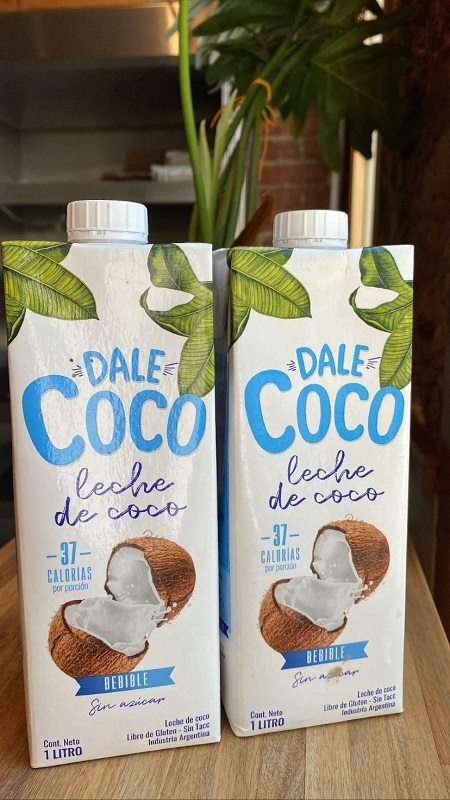

NUESTRO ALMACÉN
A continuación les mostramos parte de los productos que ofrecemos en el local, algunos muy conocidos como lo son los de marcas tales como: Pampagourmet, Recetas de entonces, Nina, Natural Candy, etc. Y otros no tanto pero que son 100% naturales y caseros, especialidades de nuestras sierras de Córdoba. Cómo por ejemplo la yerba agroecológica, y el yougurt natural en botella.
Los invitamos a que visiten nuestro perfil de Instagram que aparece en la sección de contacto, para que puedan apreciar más variedades de productos!


 
